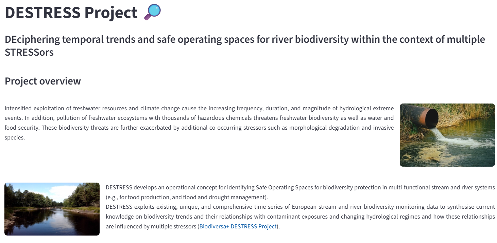
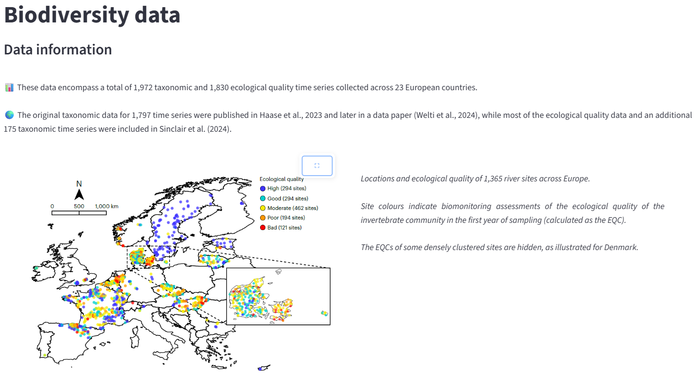
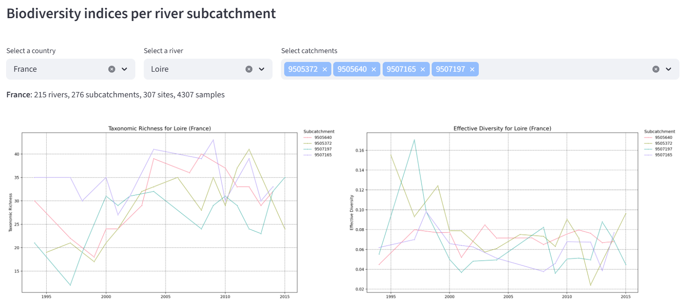
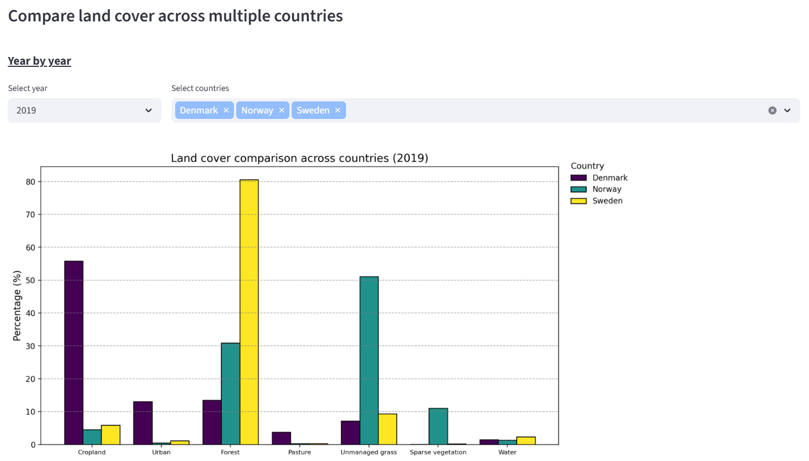

Here are research projects for which I developed dashboards
and interactive platforms for environmental data visualization and analysis.
DEciphering temporal trends and safe operating spaces for river biodiversity within the context of multiple STRESSors
European project aiming to analyse multiple pressures affecting aquatic ecosystems and to develop decision-support tools for water managers.



